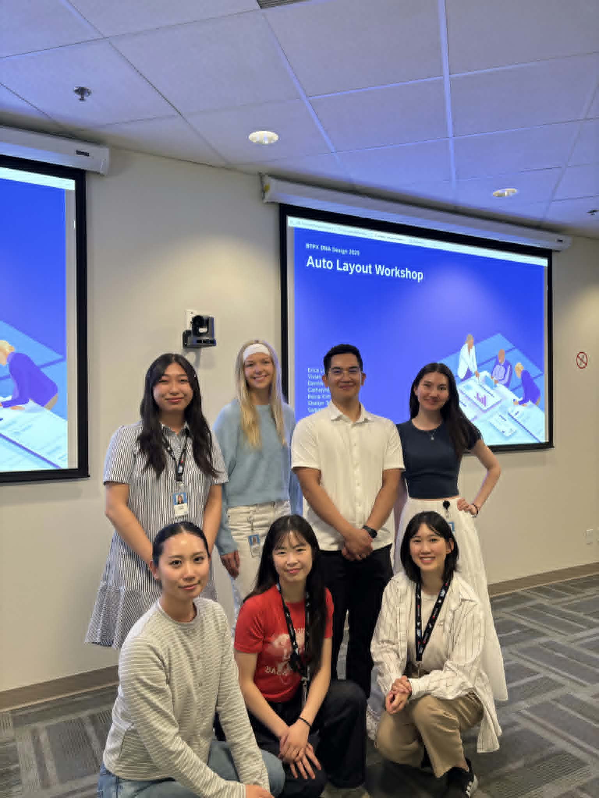
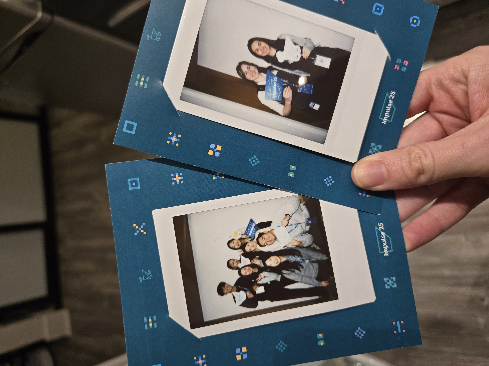
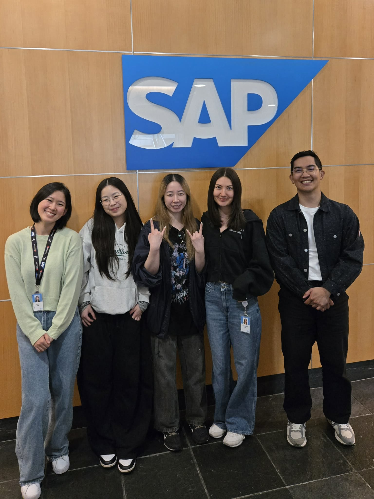

🔒 Most of my work is under NDA. The work shown here is intentionally limited, please feel free to reach out to discuss in more detail
What is SAP Analytics Cloud
SAP Analytics Cloud (SAC) is an enterprise platform combining business intelligence, data visualization, and planning to help organizations make data-driven decisions. With over 100,000 daily business users, SAC delivers complex analytics experiences at scale, with expanding AI-powered capabilities.
Key Contributions
Mobile-Native Data Visualization
- Challenge
- Translate complex desktop charts into intuitive mobile native experiences, balancing data density with usability on smaller screens.
- Impact
- Designed mobile-native chart cards and interactions for 10+ chart types, establishing reusable patterns and interaction guidelines for consistent mobile experiences.
Scalable Chart Discovery
- Challenge
- As the chart library expanded, users needed a faster, more intuitive way to discover and select the right visualization for their data.
- Impact
- Redesigned the chart selection experience with improved discoverability to support a growing library of visualizations.
Design System Contribution
- Challenge
- Unify inconsistent components across 9+ data diagrams to create a cohesive, scalable experience.
- Impact
- Designed and shipped three reusable, cross-product design system components, improving consistency and reducing the need for one-off design solutions.
UI Theming
- Challenge
- Migrate core analytics workflows to SAP's updated design system while identifying opportunities to improve usability and interaction consistency.
- Impact
- Led the redesign of three core workflows, collaborating closely with developers on implementation, design specifications, and QA to ensure a consistent experience.
A Few Kind Words From the Team
“Communicated her ideas clearly, welcomed feedback to improve her designs”
Working with Catherine on the mobile team was a great experience. Catherine was able to balance design ideas while focusing on user and business needs. She was able to communicate her ideas clearly, welcomed feedback to improve her designs and was able to take responsibility and initiative during the development process.
“Her attention to detail shines through in every aspect of her work.”
Catherine approaches each project with empathy and curiosity, building deep expertise through thoughtful research and collaboration. She consistently shows up with care and professionalism — her attention to detail shines through in every aspect of her work.
Reflections
I'm so grateful for my time at SAP, it taught me how to simplify complex experiences at scale, collaborate with diverse global teams, and embrace new challenges that pushed me to grow as a designer.


